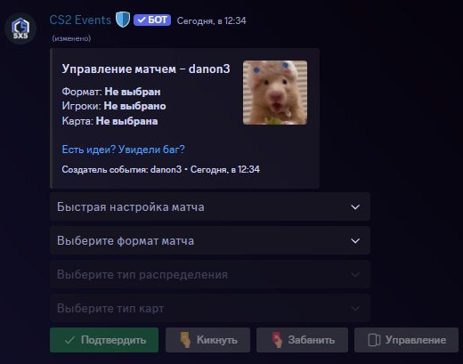

# 💻┇проверка-на-читы — канал для отправки на проверку, просмотр о статуса проверки.
# 💻┇база-нарушений — канал для информации о пользователях сервера (читаем закреп канала*).
# 📁┇база-нарушителей — канал для сбора информации о частых нарушителях клозов.
# ⌚┇объявления — канал для публикации важной информации, анонсов грядущих собраний.
# 📘┇информация — информация о ролях, обязаностях и запретах, а так же ссылки на важные админ ресурсы.
# 📙┇команды — список всех административных команд с указанием минимальной роли, необходимой для их использования.
# 📝┇whitelist — заявки на снятие игровых ограничений для тех, кто не полностью соответствует установленным требованиям.
Канал # 📝┇whitelist доступен от роли @• Наставник, при необходимости обращаться к ним в канале # 👥┇чат.
# 👥┇чат — общий чат для всей ветки, для общения, просьб помочь и т.д.
# 📕┇клоз-наказания — канал для публикации 🔴 выговоров, 🟠 предупреждений и 🟡 замечаний, старайтесь не получать их :)
# 📗┇клоз-поощрения — канал для публикации 🟢 похвал и 🔵 благодарностей, старайтесь заслужить их :)
# 🤖┇обновления-бота — канал с публикацией мелких и важных изменений в функционале бота, правок на серверах и т.д.
# 🔧┇для-клоз-команд — канал для ввода рабочих команд, обычные не запрещены, такие как j!ранг.
🔊 🎮 Клозеры — канал для ваших нужд, общаемся, решаем проблемы и т.д.
🔊 🌚 Разборы — канал для решения внутренних проблем в клозмоде.
🔊 ⌚ Собрание — канал для собраний, как общих так и для опреленных ролей.
# ➕┇создать — канал для создания клоза.
# 📜┇информация — канал с информацией по клозам (шаблоны, форматы, карты и т.д.).
# 🎮┇правила — канал для быстрого просмотра провил клозов.
# 🏆┇итоги — канал со всеми игровыми итогами, можно использовать для проверки победителей клозов (если просят роль).
# 🔥┇дуэли — канал для игры 1x1, простыми словами дуэльки, требуется модерация.
Модерация канала состоит в удалении оффтопа, а то есть любых сообщений от пользователей.Все нарушители получают блокировку на 30мин с причиной "Оффтоп".
# 🔧・управление — ваш главный помощник в управлении клозом.
# ✏・запись — канал записи, можете отписывать просьбы на слот и т.д.
🔊 ⏳ • ожидание — канал ожидания.
🔊 🅰 • Team — игровая комната команды А.
🔊 🅱 • Team — игровая комната команды Б.
 Быстрая настройка матча:⚡ Быстрая игра — случайные миксы команд, общее голосование выбора карты.
👑 Капитаны — капитаны поочередно делают Pick игроков и Ban карт.
🏆 Для турнира — свободный выбор команды, Ban'ы карты.
🏹 AIM 1x1 — быстрая дуэль с готовыми настройками.
5x5 Esports — используется действующий турнирный маппул карт.
5x5 Old maps — карты которые в данный момент удалены с игры.
5x5 Mirror — матч 5 на 5 с отзеркаленными картами.
2x2 Wingman — подобие режима "Напарники".
Миксы — случайное распределение.
Капитаны — капитаны выбирают состав.
Свободный — каждый участник может выбрать команду.
Карта на выбор Ведущего — заранее выбранная карта.
Random — случайный выбор.
Общее голосование — все участники голосуют за карту.
Pick/Ban карты — капитаны поочереди запрещают карты.
🔔 Отправить уведомление — отправить пинг роли @Close с необходимым плюсом.
🔄 Настроить новый матч — завершает актуальный матч, сбрасывает все актуальные настройки клоза.
🏹 Включить разминку — отправляет в запись коннект на рандомный режим с возможностью замены режима.
➕ Добавить игроков — добавить в запись игроков которые сделали все привязки.
➖ Исключить игрока — удалить из записи игрока без запрета на повторную запись.
✍ Заменить игрока — замена игрока из записи на пользователя из вне игры.